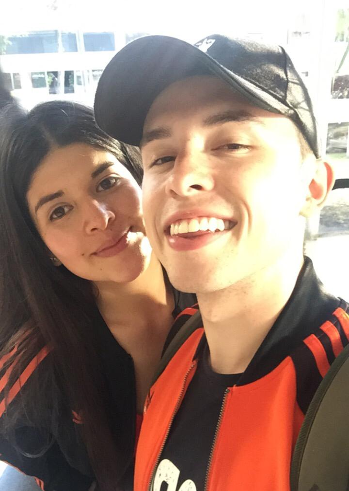

About Me
My name is Santiago Espinosa Lizcano, and I am 20 years old. I was born in April 14th 2000, in Bogota, Colombia. I graduated from high school in 2017, and then decided to take a great adventure to travel to the United States where I ended up studying Business Administration. Currently, my adventured followed up in Canada where I am studying IMD
There are lot of thing and hobbies I enjoy doing. I love playing soccer. In fact, I played a national tournament in my home country. I also like learning languages. I am currently working my way to learn Portuguese and French. As I final though, I would like to share with you a quote that has inspired me throughout the years.
Success is not final; failure is not fatal: it is the courage to continue that counts ‐ Winston Churchill
This is a list of some additional languages I plan to learn in the future:
- Russian
- Italian
- German